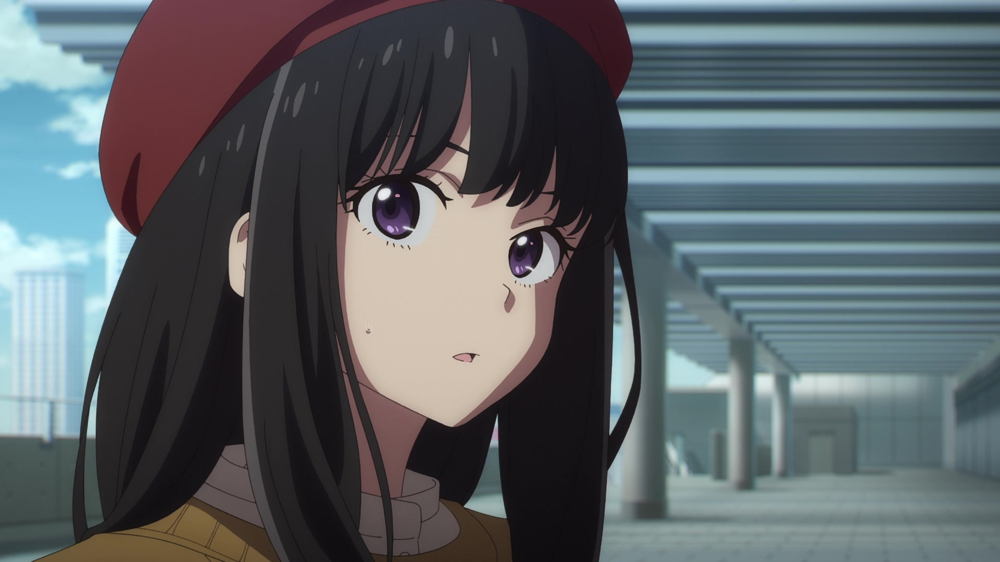
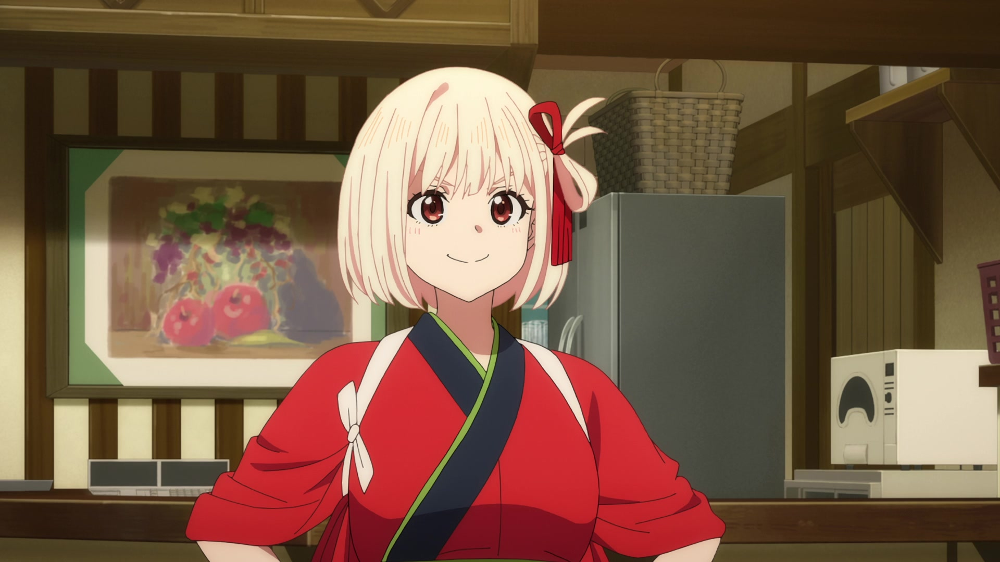
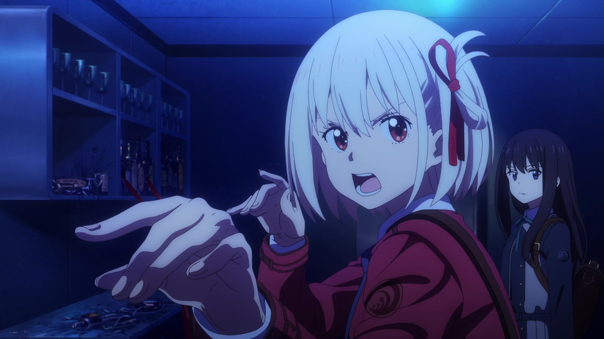
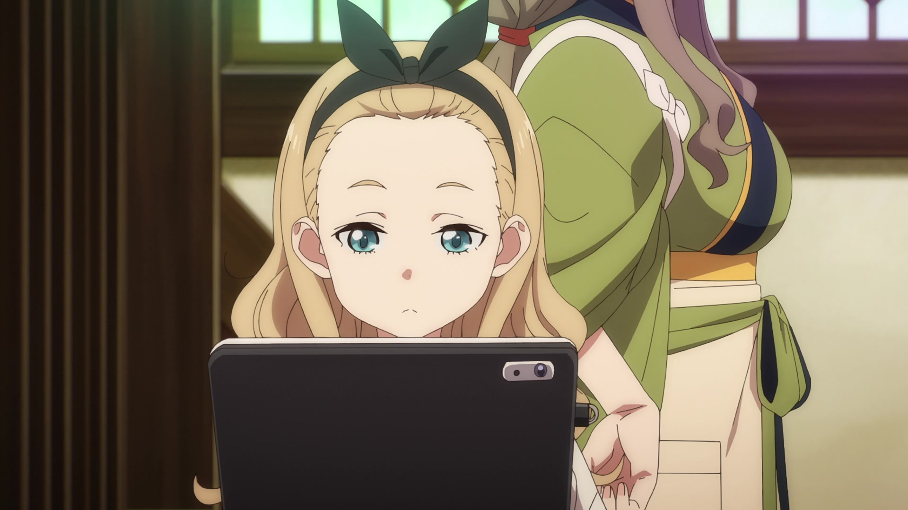
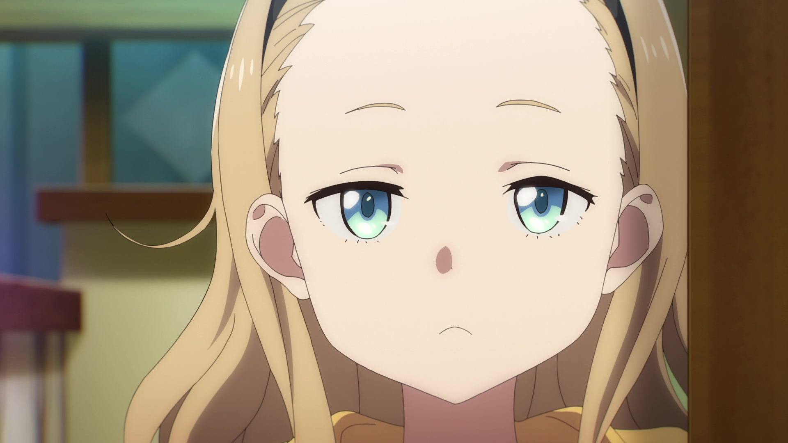
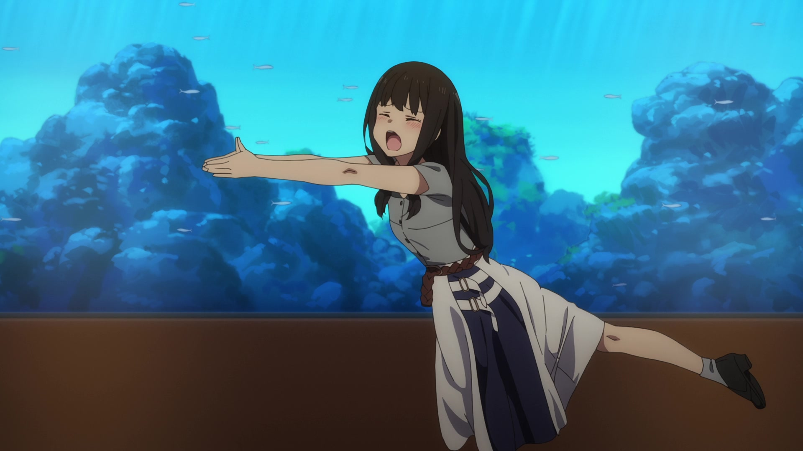

<!DOCTYPE html>
<html lang="en">
<head>
    <meta charset="UTF-8">
    <title>Title</title>
    <style>
        body {
            display: flex;
            justify-content: center;
            align-items: center;
            min-height: 100vh;
            margin: 0;
        }
        .w-240 {
            width: 60rem;
        }

        .h-120 {
            height: 30rem;
        }
        img{
            opacity: 0;
        }
    </style>
</head>
<body>
<div class="relative w-screen h-screen">
<!--    <main class="overflow-hidden">-->
<!--        <div data-scroll>-->
<!--            <div class="relative w-screen h-screen flex-center">-->
<!--                -->
<!--            </div>-->
<!--            <div class="relative w-screen h-screen flex-center">-->
<!--                -->
<!--            </div>-->
<!--            <div class="relative w-screen h-screen flex-center">-->
<!--                -->
<!--            </div>-->
<!--            <div class="relative w-screen h-screen flex-center">-->
<!--                -->
<!--            </div>-->
<!--            <div class="relative w-screen h-screen flex-center">-->
<!--                -->
<!--            </div>-->
<!--            <div class="relative w-screen h-screen flex-center">-->
<!--                -->
<!--            </div>-->
<!--        </div>-->
<!--    </main>-->
    <div class="twisted-gallery fixed -z-1 inset-0 w-screen h-screen"></div>
    <div class="template w-full h-full bg-black"></div>
</div>
</body>

<script type="module">
    import * as THREE from '../../../3d/three.module.js';
    import { OrbitControls }  from '../../../3d/OrbitControls.js'
    import { EffectComposer } from "../../../postprocessing/EffectComposer.js";
    import Stats from "../../../libs/stats.module.js";

    const vertexShader = `
varying vec2 vUv;
varying vec3 vPosition;

void main(){
    vec4 modelPosition=modelMatrix*vec4(position,1.);
    vec4 viewPosition=viewMatrix*modelPosition;
    vec4 projectedPosition=projectionMatrix*viewPosition;
    gl_Position=projectedPosition;

    vUv=uv;
    vPosition=position;
}
`;

    const fragmentShader = `
uniform float uTime;
uniform vec2 uMouse;
uniform vec2 uResolution;

varying vec2 vUv;
varying vec3 vPosition;

void main(){
    vec3 color=vec3(vUv.x,vUv.y,1.);
    gl_FragColor=vec4(color,1.);
}
`;

    const calcAspect = (el) => el.clientWidth / el.clientHeight;

    const getNormalizedMousePos = (e) => {
        return {
            x: (e.clientX / window.innerWidth) * 2 - 1,
            y: -(e.clientY / window.innerHeight) * 2 + 1
        };
    };

    class MouseTracker {
        mousePos;
        mouseSpeed;
        constructor() {
            this.mousePos = new THREE.Vector2(0, 0);
            this.mouseSpeed = 0;
        }
        // 追踪鼠标位置
        trackMousePos() {
            window.addEventListener("mousemove", (e) => {
                this.setMousePos(e);
            });
            window.addEventListener(
                "touchstart",
                (e) => {
                    this.setMousePos(e.touches[0]);
                },
                { passive: false }
            );
            window.addEventListener("touchmove", (e) => {
                this.setMousePos(e.touches[0]);
            });
        }
        // 设置鼠标位置
        setMousePos(e) {
            const { x, y } = getNormalizedMousePos(e);
            this.mousePos.x = x;
            this.mousePos.y = y;
        }
        // 追踪鼠标速度
        trackMouseSpeed() {
            // https://stackoverflow.com/questions/6417036/track-mouse-speed-with-js
            let lastMouseX = -1;
            let lastMouseY = -1;
            let mouseSpeed = 0;
            window.addEventListener("mousemove", (e) => {
                const mousex = e.pageX;
                const mousey = e.pageY;
                if (lastMouseX > -1) {
                    mouseSpeed = Math.max(
                        Math.abs(mousex - lastMouseX),
                        Math.abs(mousey - lastMouseY)
                    );
                    this.mouseSpeed = mouseSpeed / 100;
                }
                lastMouseX = mousex;
                lastMouseY = mousey;
            });
            document.addEventListener("mouseleave", () => {
                this.mouseSpeed = 0;
            });
        }
    }

    class Base {
        debug;
        container;
        perspectiveCameraParams;
        orthographicCameraParams;
        cameraPosition;
        lookAtPosition;
        rendererParams;
        mouseTracker;
        scene;
        camera;
        renderer;
        controls;
        stats;
        shaderMaterial;
        composer;
        constructor(sel, debug = false) {
            this.debug = debug;
            this.container = document.querySelector(sel);
            this.perspectiveCameraParams = {
                fov: 75,
                near: 0.1,
                far: 100
            };
            this.orthographicCameraParams = {
                zoom: 2,
                near: -100,
                far: 1000
            };
            this.cameraPosition = new THREE.Vector3(0, 3, 10);
            this.lookAtPosition = new THREE.Vector3(0, 0, 0);
            this.rendererParams = {
                alpha: true,
                antialias: true
            };
            this.mouseTracker = new MouseTracker();
        }
        // 初始化
        init() {
            this.createScene();
            this.createPerspectiveCamera();
            this.createRenderer();
            this.createMesh({});
            this.createLight();
            this.createOrbitControls();
            this.createDebugUI();
            this.addListeners();
            this.setLoop();
        }
        // 创建场景
        createScene() {
            const scene = new THREE.Scene();
            this.scene = scene;
        }
        // 创建透视相机
        createPerspectiveCamera() {
            const { perspectiveCameraParams, cameraPosition, lookAtPosition } = this;
            const { fov, near, far } = perspectiveCameraParams;
            const aspect = calcAspect(this.container);
            const camera = new THREE.PerspectiveCamera(fov, aspect, near, far);
            camera.position.copy(cameraPosition);
            camera.lookAt(lookAtPosition);
            this.camera = camera;
        }
        // 创建正交相机
        createOrthographicCamera() {
            const { orthographicCameraParams, cameraPosition, lookAtPosition } = this;
            const { left, right, top, bottom, near, far } = orthographicCameraParams;
            const camera = new THREE.OrthographicCamera(
                left,
                right,
                top,
                bottom,
                near,
                far
            );
            camera.position.copy(cameraPosition);
            camera.lookAt(lookAtPosition);
            this.camera = camera;
        }
        // 更新正交相机参数
        updateOrthographicCameraParams() {
            const { container } = this;
            const { zoom, near, far } = this.orthographicCameraParams;
            const aspect = calcAspect(container);
            this.orthographicCameraParams = {
                left: -zoom * aspect,
                right: zoom * aspect,
                top: zoom,
                bottom: -zoom,
                near,
                far,
                zoom
            };
        }
        // 创建渲染
        createRenderer() {
            const { rendererParams } = this;
            const renderer = new THREE.WebGLRenderer(rendererParams);
            renderer.setClearColor(0x000000, 0);
            this.container.appendChild(renderer.domElement);
            this.renderer = renderer;
            this.resizeRendererToDisplaySize();
        }
        // 调整渲染器尺寸
        resizeRendererToDisplaySize() {
            const { renderer } = this;
            renderer.setSize(this.container.clientWidth, this.container.clientHeight);
            renderer.setPixelRatio(Math.min(window.devicePixelRatio, 2));
        }
        // 创建网格
        createMesh(
            meshObject,
            container = this.scene
        ) {
            const {
                geometry = new THREE.BoxGeometry(1, 1, 1),
                material = new THREE.MeshStandardMaterial({
                    color: new THREE.Color("#d9dfc8")
                }),
                position = new THREE.Vector3(0, 0, 0)
            } = meshObject;
            const mesh = new THREE.Mesh(geometry, material);
            mesh.position.copy(position);
            container.add(mesh);
            return mesh;
        }
        // 创建光源
        createLight() {
            const dirLight = new THREE.DirectionalLight(
                new THREE.Color("#ffffff"),
                0.5
            );
            dirLight.position.set(0, 50, 0);
            this.scene.add(dirLight);
            const ambiLight = new THREE.AmbientLight(new THREE.Color("#ffffff"), 0.4);
            this.scene.add(ambiLight);
        }
        // 创建轨道控制
        createOrbitControls() {
            const controls = new OrbitControls(this.camera, this.renderer.domElement);
            const { lookAtPosition } = this;
            controls.target.copy(lookAtPosition);
            controls.update();
            this.controls = controls;
        }
        // 创建调试UI
        createDebugUI() {
            const axisHelper = new THREE.AxesHelper();
            this.scene.add(axisHelper);
            const stats = Stats();
            this.container.appendChild(stats.dom);
            this.stats = stats;
        }
        // 监听事件
        addListeners() {
            this.onResize();
        }
        // 监听画面缩放
        onResize() {
            window.addEventListener("resize", (e) => {
                const aspect = calcAspect(this.container);
                const camera = this.camera;
                camera.aspect = aspect;
                camera.updateProjectionMatrix();
                this.resizeRendererToDisplaySize();
                if (this.shaderMaterial) {
                    this.shaderMaterial.uniforms.uResolution.value.x = window.innerWidth;
                    this.shaderMaterial.uniforms.uResolution.value.y = window.innerHeight;
                }
            });
        }
        // 动画
        update() {
            console.log("animation");
        }
        // 渲染
        setLoop() {
            this.renderer.setAnimationLoop(() => {
                this.update();
                if (this.controls) {
                    this.controls.update();
                }
                if (this.stats) {
                    this.stats.update();
                }
                if (this.composer) {
                    this.composer.render();
                } else {
                    this.renderer.render(this.scene, this.camera);
                }
            });
        }
    }

    class TwistedGallery extends Base {
        clock;
        constructor(sel, debug) {
            super(sel, debug);
            this.clock = new THREE.Clock();
            this.cameraPosition = new THREE.Vector3(0, 0, 600);
            const fov = this.getScreenFov();
            this.perspectiveCameraParams = {
                fov,
                near: 100,
                far: 2000,
            };
        }
        // 初始化
        init() {
            this.createScene();
            this.createPerspectiveCamera();
            this.createRenderer();
            this.createShaderMaterial();
            this.createPlane();
            this.createLight();
            this.mouseTracker.trackMousePos();
            this.createOrbitControls();
            this.addListeners();
            this.setLoop();
        }
        getScreenFov() {
            const RAD2DEG = 180 / Math.PI
            return RAD2DEG * 2 * Math.atan(window.innerHeight / 2 / this.cameraPosition.z)
        }
        // 创建材质
        createShaderMaterial() {
            const shaderMaterial = new THREE.ShaderMaterial({
                vertexShader,
                fragmentShader,
                side: THREE.DoubleSide,
                uniforms: {
                    uTime: {
                        value: 0
                    },
                    uMouse: {
                        value: new THREE.Vector2(0, 0)
                    },
                    uResolution: {
                        value: new THREE.Vector2(window.innerWidth, window.innerHeight)
                    }
                }
            });
            this.shaderMaterial = shaderMaterial;
        }
        // 创建平面
        createPlane() {
            const geometry = new THREE.PlaneGeometry(1, 1, 100, 100);
            const material = this.shaderMaterial;
            this.createMesh({
                geometry,
                material
            });
        }
        // 动画
        update() {
            const elapsedTime = this.clock.getElapsedTime();
            const mousePos = this.mouseTracker.mousePos;
            if (this.shaderMaterial) {
                this.shaderMaterial.uniforms.uTime.value = elapsedTime;
                this.shaderMaterial.uniforms.uMouse.value = mousePos;
            }
        }
    }


    const start = () => {
        const twistedGallery = new TwistedGallery(".twisted-gallery", true);
        twistedGallery.init();
    };

    start();

</script>
</html>
